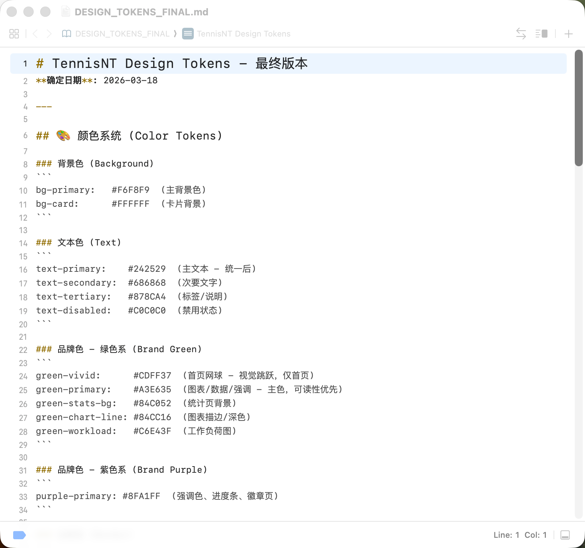
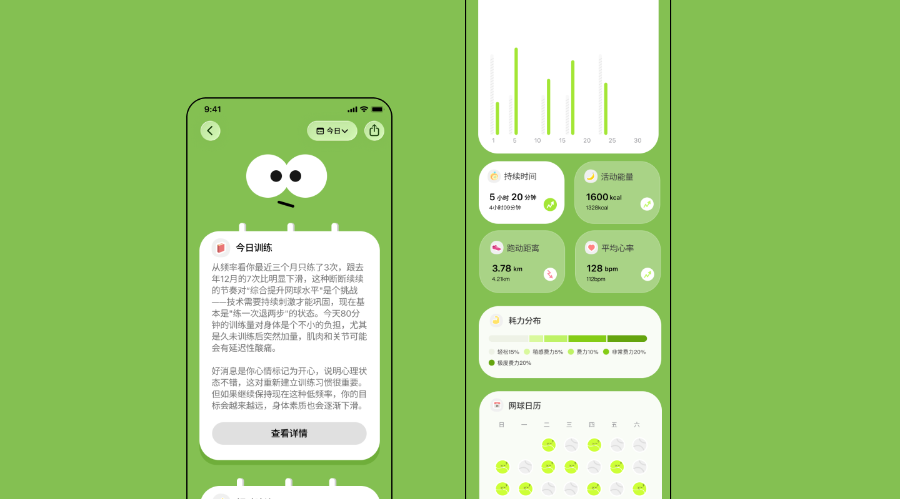
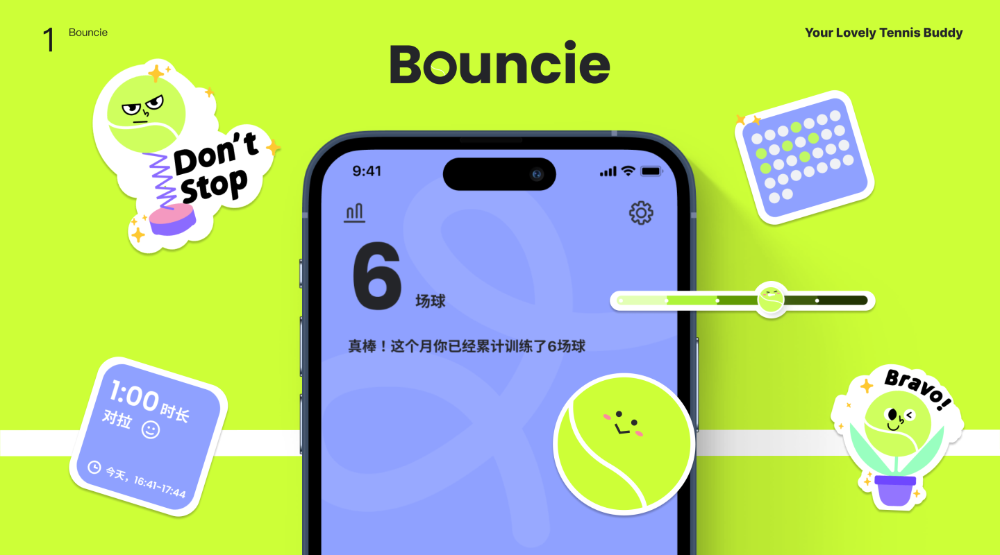

🏆 Nominated — Xiaohongshu Independent Developer Competition
A tennis training tracker, and the project where I figured out how to work AI-native. It started as a way to ship faster — but what it really taught me was a question worth more than any tool: when AI can do more and more, what's the part of a product you must never hand off? For Bouncie, that answer is its whole reason to exist — being fun.
The home screen runs on SpriteKit — tennis balls tumble in, bounce off each other, and settle with their faces. Haptics and sound on every collision. It does no functional work at all; it exists purely to make you smile.
Building the ground AI can stand on
Bouncie started from zero, with all the uncertainty that comes with a 0→1 product. We had no design system — which meant a lot of hardcoded values scattered through the codebase, the usual mess of an early build. As the app grew, that mess became the bottleneck.
So I used a skill to audit the entire project and authored a design.md — a single source of truth for the product's design language. This wasn't just housekeeping. It turned the design judgment living in my head into rules a machine and a collaborator could both read and execute. Spacing, color, type, component behavior — all written down, all followable. The design.md is a translation layer between how I think and what the tools build.

Using a skill to audit the codebase and generate the design.md — turning scattered, hardcoded values into a single set of rules the whole project could follow.
The proof the system worked
Here's the moment I knew the system held. My engineering collaborator had an idea for a feature — not an illustration-heavy one, but a real addition to the app. She built it herself, end to end. And it fit. It didn't feel bolted on; it felt like it had always been part of Bouncie.
That's the real payoff of writing the design down. Visual consistency stopped depending on me personally reviewing every screen. The coherence was built into the rules, not policed by hand. I'd gone from doing the design to designing a system that could hold its own shape without me.
Knowing the edge of what to automate
So I lean on AI for the things it's genuinely good at — UI optimization, refactoring, holding the design system together. That's the work that should be consistent, and consistency is exactly where AI shines.

AI-driven analysis of each training session — interval load, effort distribution, trends over time. The kind of consistent, data-heavy work AI handles well, and should.
But every illustration in Bouncie is drawn by hand. The moody tennis balls, the reactive mascot, the sticker badges — none of them are generated. Not out of nostalgia, and not because I can't prompt an image model. It's a brand decision. Bouncie's entire reason for existing is that it's fun — and "fun" is exactly the thing AI can't reliably make yet. It renders general; this product needs specific. A ball that's funny, a mascot with an actual mood — that's still a human read on what will make someone smile.
As AI gets stronger, the real skill isn't using it — it's knowing what a product can't afford to let it touch.
AI is improving fast, and I expect that line to keep moving. But right now, the part of Bouncie that makes people screenshot it and post it — the character, the charm, the sense that someone with a sense of humor made this — is the part I keep for myself. That's not a limitation of the workflow. That's the point of it: automate the consistent, protect the alive.

Every sticker, badge, and widget — the moody balls, "Don't Stop," "Bravo!" — drawn by hand. This is the part of the product I'll never hand off.
Two more decisions worth a line each. Physics as delight: the home screen uses SpriteKit to simulate real ball physics — five tennis balls tumble in, bounce off each other, and settle with their faces. With haptics and sound, it turns a stat page into something you want to touch, doing no functional work at all. Reports built to travel: the monthly summary is dense with data and shareable in one tap — designed, deliberately, to be beautiful enough that people post it. The shareable report and home-screen widgets carry Bouncie's character outside the app, where it does the marketing for free.
8K+
Downloads, zero ad spend
Nominated
XHS Indie Dev Competition
100%
Illustrations hand-drawn